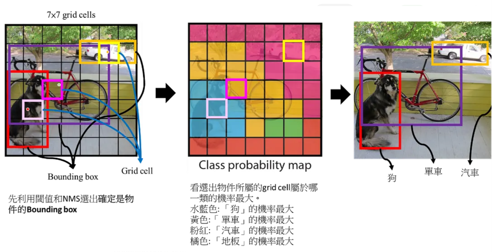

它主要在做什麼？
YOLO 的工作是物件偵測（object detection），也就是在一張圖片或影片畫面中找出多個物體， 並用邊界框（bounding box）把物體位置框起來。每個框通常會搭配類別名稱與信心分數（confidence score）， 例如「person 0.91」、「car 0.86」。因此它和一般影像分類（image classification）不同， 因為分類模型通常只輸出整張圖片的類別，而 YOLO 還要指出物體在畫面中的位置。
這是我在學習 YOLO 物件偵測演算法時整理出來的網頁筆記。主要透過網路文章、他人的筆記整理， 再搭配 GPT 協助釐清，學習 YOLO 如何理解圖片、辨識物件、擷取視覺特徵，最後把我理解後的內容整理成紀錄。 在整理的過程中，我逐漸發現 YOLO 並不是單純把物體用框線圈起來，而是先從圖片中的像素變化抓出視覺線索， 再把這些線索整理成物體位置、類別判斷與信心分數，最後輸出可以被人看懂的偵測結果。
YOLO，全名是 You Only Look Once。它不是只判斷圖片裡「有什麼東西」， 而是要同時回答物體的類別、位置，以及模型對這個判斷的信心程度。
YOLO 的工作是物件偵測（object detection），也就是在一張圖片或影片畫面中找出多個物體， 並用邊界框（bounding box）把物體位置框起來。每個框通常會搭配類別名稱與信心分數（confidence score）， 例如「person 0.91」、「car 0.86」。因此它和一般影像分類（image classification）不同， 因為分類模型通常只輸出整張圖片的類別，而 YOLO 還要指出物體在畫面中的位置。
在判斷影像時，我們常常不只想知道畫面中有沒有某種物體， 而是想知道物體出現在哪裡、數量有多少、是否重疊、是否需要即時反應。 YOLO 的價值就在於把定位與分類整合在同一個模型流程中， 讓電腦能從圖片像素中逐層擷取視覺特徵，再把這些特徵轉成可判讀的偵測結果。


YOLO 的特色是能在速度與偵測效果之間取得不錯的平衡，因此很適合需要快速分析影像的情境。 不同應用會重視不同指標，例如交通場景可能重視即時性，醫學或工業檢測則會更在意漏判、定位精度與資料標註品質。
只用網路上的資源學習仍然有部分不理解的地方，搭配 GPT 的輔助，釐清我不熟悉的內容。
我看文章時知道 YOLO 會把圖片切成格子（grid cell），但我不太懂： 如果一個物體橫跨好幾格，到底是哪一格要負責預測這個物體？
YOLO 的概念不是讓物體碰到的每一格都負責，而是看物體中心點落在哪一個格子。 中心點所在的那格會負責預測這個物體的邊界框。 這樣可以避免每個物體被太多格同時負責，但如果物體很小、很密集或中心點很接近，就可能造成偵測困難。
YOLO 的信心分數是不是就等於「這個框裡面有某個類別」的機率？ 還是它其實跟邊界框的準確度也有關？
在 YOLOv1 的概念中，信心分數不只是單純的類別機率， 它包含「框中是否有物體」以及「預測框和真實框重疊程度」的概念。 所以它和交集聯集比（IoU, Intersection over Union）有關。真正判斷類別時， 還會再結合類別機率（class probability），得到每個類別對應的分數。
GPT 在解釋信心分數時有提到它和 IoU 有關，但我一開始覺得有點矛盾： 如果 confidence 是模型對類別的信心，那為什麼又會牽涉到預測框和真實框的重疊程度？ 因為這個地方會影響我後面理解平均精度均值（mAP, mean Average Precision）、 非極大值抑制（NMS, Non-Maximum Suppression）和偵測結果的判讀，所以我另外搜尋文章確認。
GPT 說 YOLO 的信心分數不是單純的分類機率，而是和「是否有物體」以及 「邊界框預測得準不準」有關。也就是說，一個框即使類別看起來像某個物體， 但如果框的位置和大小不準，最後的分數仍然可能受到影響。
我原本把信心分數想成「模型覺得它是某類物體的機率」， 所以會把它和類別機率混在一起。這樣理解會造成一個問題： 我會忽略邊界框本身的準確度，只注意類別名稱和數字高低。
我查到 YOLOv1 的說明中，信心分數和預測框與真實框之間的 IoU 有關； 而每個格子還會預測類別的條件機率。測試階段會把邊界框的信心分數和類別機率結合， 得到特定類別信心分數。也就是說，信心分數、類別機率、IoU 是相關但不同的概念， 不能全部當成同一個數字來理解。
我後來比較能理解 YOLO 的輸出不是只有「這是什麼類別」， 而是同時包含「哪裡有物體」、「框得準不準」、「它屬於哪一類」。 這也讓我理解為什麼物件偵測不能只用準確率（accuracy）判斷好壞， 而需要看精確率（precision）、召回率（recall）、平均精度（AP）和 mAP 這類指標。
這一段查證讓我發現，GPT 比較適合用來幫我把卡住的概念先講順， 但只看 GPT 的回答還不夠。因為 YOLO 的名詞彼此很接近，如果沒有回去對照筆記文章或論文架構， 很容易以為自己懂了，但其實只是把幾個名詞連在一起。
透過這次比對資料，我比較能用自己的方式理解：YOLO 的輸出是一組「位置 + 類別 + 信心」的組合， 而不是單一的分類答案。這個理解也銜接到後面流程圖的部分，因為整個流程從影像輸入、卷積神經網路特徵擷取、 格子預測、邊界框評分，到最後 NMS 篩選，都是為了把這組結果整理出來。
參考他人筆記中的 YOLO 流程圖，並用我自己的理解拆解圖中的每個階段。

這裡放入幾個理解 YOLO 時常用到的基礎公式，幫助我把「模型輸出分數」和「偵測結果好不好」連起來。
IoU 用來衡量預測框和真實框重疊得多不多。數值越接近 1，代表預測框越接近真實物體位置； 數值越低，代表框的位置或大小可能偏差較大。
在 YOLOv1 的觀念中，confidence 不只是「像不像某個類別」， 而是和該框是否真的有物體，以及框的位置準不準有關。
這個分數能理解成：模型認為這個框中有物體，而且該物體屬於某一類的整體把握程度。 因此偵測結果不是只看類別機率，而是同時看位置與類別。
Precision 關心「模型框出來的結果有多少是真的」； Recall 關心「真正存在的物體有多少被找出來」。這也是為什麼物件偵測常用 AP、mAP 評估，而不是只看 accuracy。


我選擇醫學影像作為案例，是因為它能同時看出 YOLO 的優點與限制。 醫學影像需要找出可疑位置，這和物件偵測的任務很接近； 但醫學應用又不能只追求速度，還必須考慮資料品質、標註一致性、不同設備造成的影像差異，以及判讀結果是否能被專業人員理解。
在醫學影像中，YOLO 可以用來協助標記 X 光片、超音波、內視鏡影像或顯微影像中的可疑目標。 例如在大量影像中先找出疑似病灶、異常組織、細胞型態變化，或是醫療器材的位置。 它的角色比較像是「初步篩選與提示工具」：先把可能需要注意的地方框出來， 讓專業人員可以更有效率地檢查，而不是從零開始逐張影像尋找。


整理我從初步認識 YOLO，到查資料、比對內容、修正理解後，最後真正學到的成果。
GPT 對我最大的幫助不是直接給答案，而是把我看文章時卡住的地方換一種說法解釋。 像格子如何負責物體中心點、信心分數和交集聯集比的關係， 這些概念如果只看文章，很容易看過去但沒有真的吸收。
GPT 有時會把複雜概念講得比較順，但也可能因此讓人忽略細節。 例如單階段偵測器（one-stage detector）、信心分數、平均精度均值這些詞， 如果只接受簡化版說明，就很容易少掉資料集、評估指標和模型限制的脈絡。
我最後學到的是，YOLO 不是單純「把物體框起來」這麼簡單， 而是一套把影像特徵、位置預測、類別判斷和結果篩選整合在一起的偵測流程。
一開始我對 YOLO 的理解其實很粗略，只知道它常被拿來做即時物件偵測， 也知道它可以在圖片中畫出框線，甚至其實在大二上參加 AI CUP 的過程中也沒有完全弄懂。 但真正開始整理的過程中，才發現自己對許多中間步驟感到模糊且不熟悉。 例如格子為什麼要負責物體中心點、邊界框的信心分數到底代表什麼、非極大值抑制為什麼可以刪掉重複框， 以及平均精度均值為什麼比單純準確率更適合評估物件偵測模型。
學習的過程中，我先閱讀他人的 YOLO 筆記與教學文章，再一邊將看不懂的地方詢問 GPT。 GPT 可以快速把觀念講成比較白話的版本，也可以讓我用比較低門檻的方式進入原本覺得艱深的概念。 但當我繼續深入追問後，仍然需要回頭對照文章內容、公式定義與流程圖，因為人工智慧的回答可能過度簡化， 甚至把相近的概念講得太像。透過不斷比對資料，我才慢慢從「大概知道 YOLO 是什麼」， 變成能說出它從輸入影像到輸出偵測框的完整邏輯。
網路資源很多，但有關 YOLO 的資料分散在不同網站，將其各取所需，整理成專屬自己的筆記內容、重新消化， 我想這才是這次作業最大的價值。經過這個過程後，我比較能用自己的話說明 YOLO 的基本架構， 也更能理解物件偵測為什麼需要同時考慮速度、定位準確度、分類能力和應用場景。